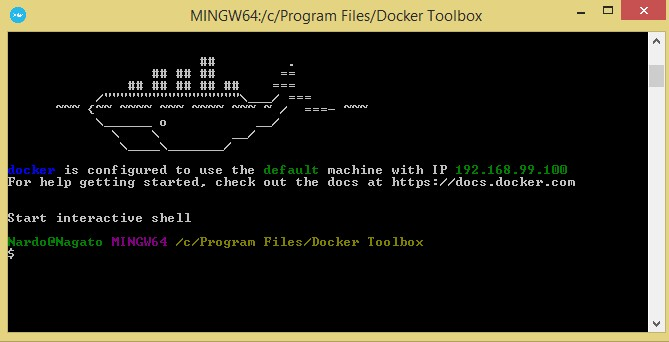
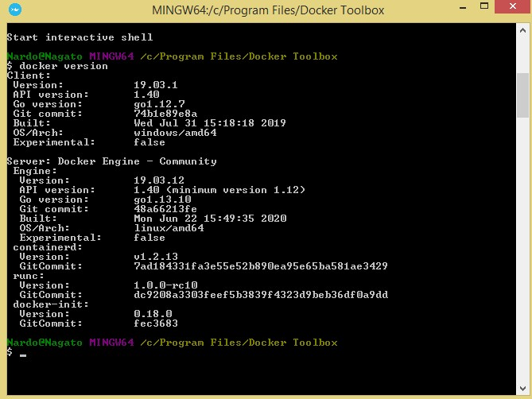
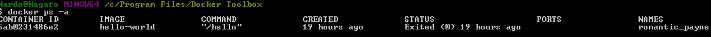
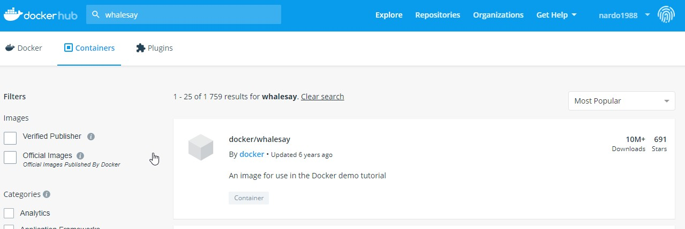
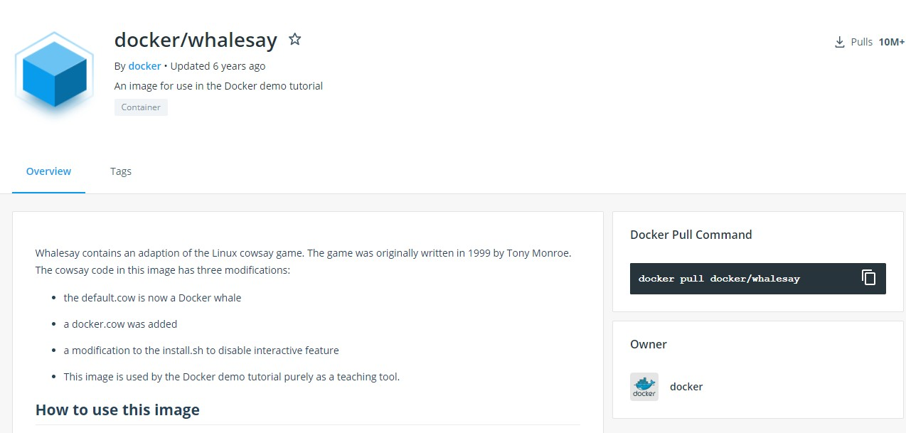
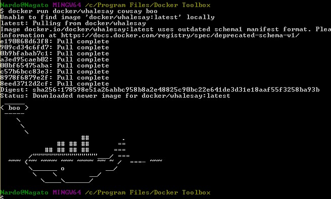
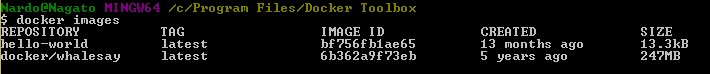

Для установки Docker необходимо скачать установщик для своей ОС (Если старый Windows? например win 8 и ниже то необходимо скачать DockerToolbox)
Установка тривиальная, единственно, то что потребуется использование VirtualBox, но он установится вместе с диструбутивом DockerToolbox. После установки на рабочем столе появится ярлык Docker Quickstart Terminal. Этот ярлык необходимо запускать с правами администратора. При первом запуске, Docker закачает линуксовую оболочку, внутри которой будут запускаться образы приложения. После успешной установки мы увидим вот такой результат:
После установки Docker вводим в консоли докера вот такую команду
docker versionВ результате мы увидим это:
Что бы посмотреть все контейнеры в системе вводим команду
docker ps -aВот результат
Образ - представляет из себя файловую систему с параметрами используемыми при запуске. Он не имеет состояния и никогда не меняется
Контейнер - является запущенным экземпляром образа. Когда вы выполняете команду запуска, Docker Engine
Docker
По всему миру люди создают Docker образы. Вы можете искать и просматривать эти образы на Docker Hub.
Откройте в вашем браузере Docker Hub
В строке поиска вводим whalesay
Кликните по docker/whalesay образу в результатах поиска. Браузер отобразит репозиторий для образа whalesay.
Каждый репозиторий образа содержит информацию о разновидностях содержащегося программного обеспечения и о том как им пользоваться. Нужно заметить что образ whalesay основан на дистрибутиве Ubuntu.На следующем шаге, вы запустите образ whalesay на вашем компьютере.
Введите команду docker run docker/whalesay cowsay boo и выполните ее.
Эта команда запускает образ whalesay в контейнере. Результат выполнения будет примерно таким:
При первом запуске образа, команда docker ищет образ в вашей системе. Если образ не обнаружен, то docker скачает его с Docker Hub.
Пока вы до сих пор находитесь в терминале командной строки, введите команду docker images.
Команда отображает список образов в локальной системе. В результате вы увидите docker/whalesay в этом списке
